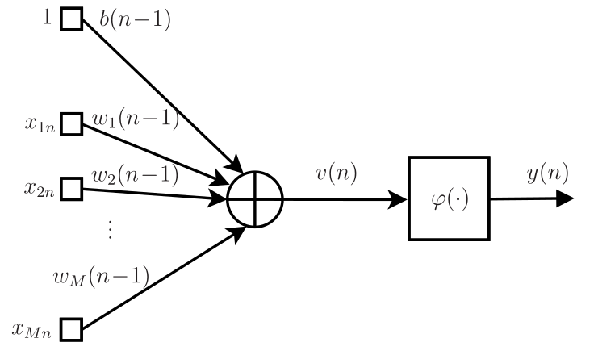
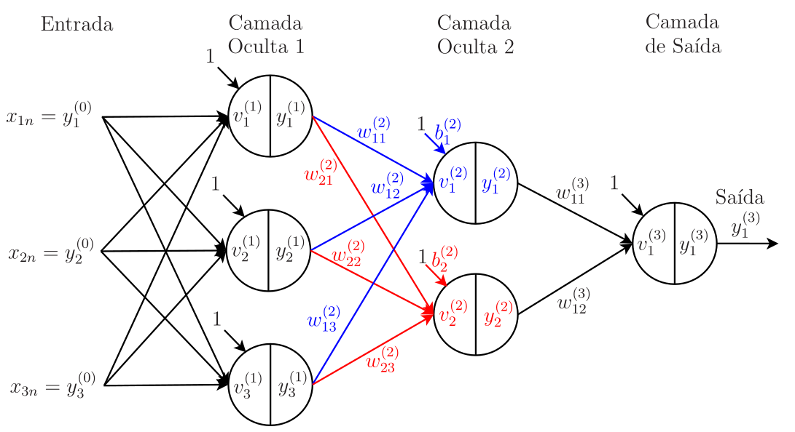
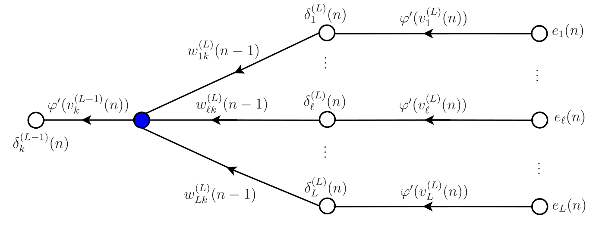
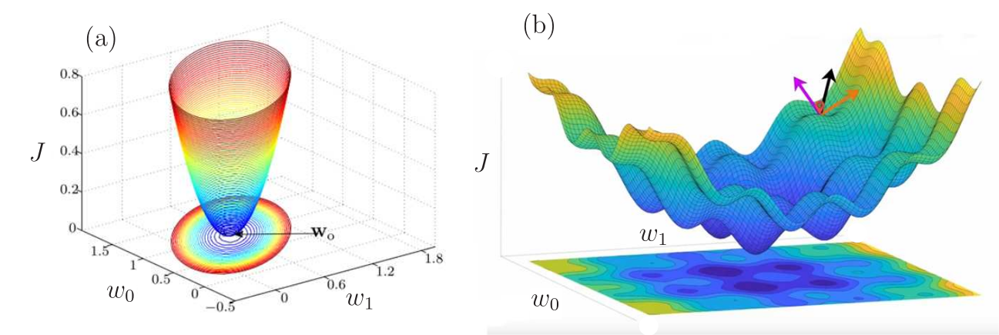
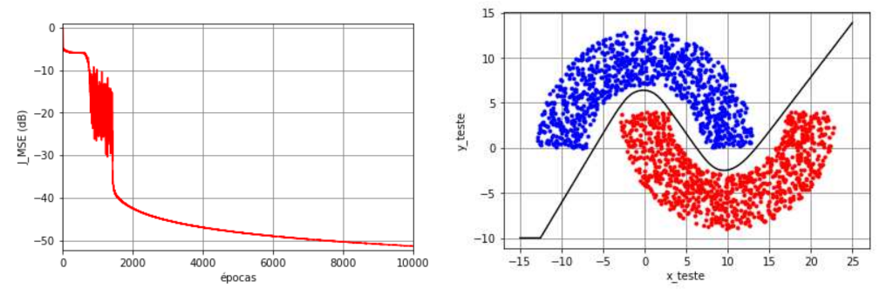
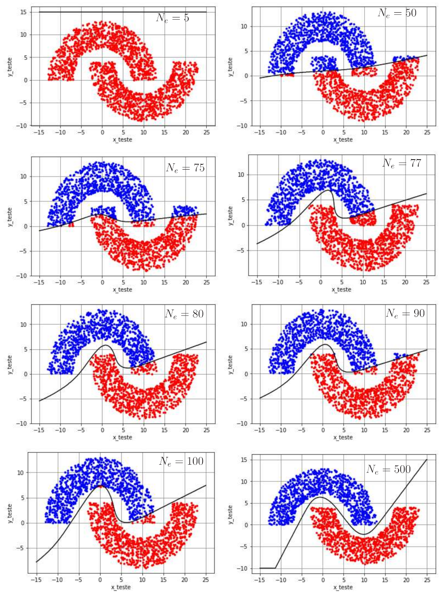
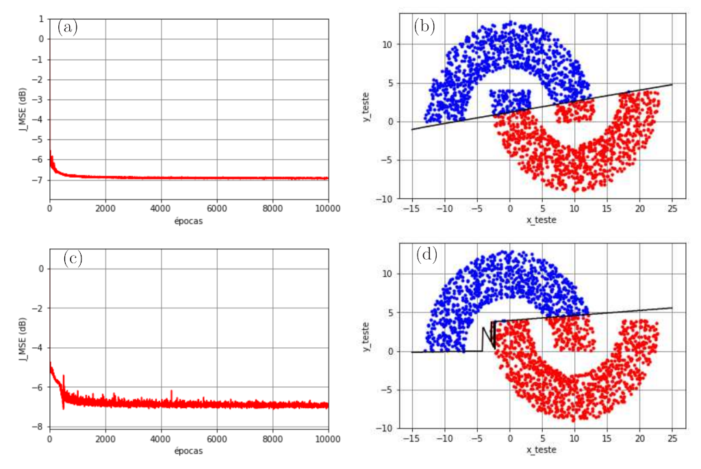

A rede perceptron multicamada
Conteúdo
A rede perceptron multicamada¶
O modelo da rede e o cálculo progressivo¶
O modelo do neurônio proposto por Rosenblatt é usado até hoje nas redes neurais. A diferença está apenas na função não linear, chamada de função de ativação. No modelo de Rosenblatt, utilizou-se a função sinal que não é derivável em todos os pontos. Em vez dessa função, é comum utilizar funções de ativação deriváveis em todos os pontos, como a função sigmoidal, a tangente hiperbólica, entre outras. Essas funções permitem chegar ao algoritmo de retropropagação (backpropagation) como veremos mais adiante.
Considerando o \(n\)-ésimo vetor dos dados de treinamento
e o vetor de pesos com dimensão \(M+1\)
a saída do combinador linear pode ser escrita como
e a saída do neurônio é dada por
em que \(\varphi(\cdot)\) é a função de ativação. Cabe observar que nesta formulação, o bias aparece na primeira posição do vetor de pesos \(\mathbf{w}\) e por isso, o vetor de entrada \(\mathbf{x}\) tem sempre o valor~\(1\) em sua primeira posição. O diagrama de fluxo de sinal do neurônio está mostrado na Fig. 26
{kind=link}

Fig. 26 Fluxo de sinal do modelo de neurônio.¶
O neurônio da Fig. 26 é a unidade básica da rede perceptron multicamada (MLP multilayer perceptron). Na maior parte das aplicações, um único neurônio não é suficiente para se obter bons resultados. Dessa forma, a rede MLP organiza os neurônios em camadas, havendo uma ou mais camadas ocultas (hidden layers) e a camada de saída1. As camadas ocultas são camadas intermediárias entre a entrada e a saída da rede neural. Cada neurônio pertencente a uma camada oculta possui sinapses associadas a pesos, ligando-o a todos os neurônios da camada anterior. No caso da primeira camada oculta, em cada neurônio, os valores da entrada da rede são ponderados pelos pesos, que junto com o bias, permitem o cálculo da combinação linear, representada na Fig. 26 por \(v(n)\). Na Fig. 27, esquematizamos o fluxo de sinal de uma rede MLP com \(L=3\) camadas, em que cada círculo representa um neurônio. Denotando o número de neurônios da camada \(j\) por \(N_{j}\), é conveniente introduzir uma notação para a configuração da rede. Assim, uma rede MLP de 3 camadas apresenta configuração \(N_1\)-\(N_2\)-\(N_3\). Especificamente, a rede da Fig. 26 tem configuração 3-2-1, ou seja, 3 neurônios na primeira camada oculta, 2 na segunda camada oculta e 1 na camada de saída. Também vamos denotar o número de neurônios da camada de saída por \(N_L\). Assim, no exemplo, \(N_L=N_3=1\).
{kind=link}

Fig. 27 Representação de uma rede MLP com \(L=3\) camadas (\(L-1=2\) camadas ocultas), cada círculo representa um neurônio.¶
Vamos usar o exemplo da rede MLP da Fig. 27 para calcular a saída da Camada Oculta~2, cujos pesos estão indicados. É importante atentar para a notação: \(\omega_{k\ell}^{(j)}\) representa o peso que liga o Neurônio~\(\ell\) da camada \(j-1\) ao Neurônio \(k\) da camada \(j\). Se o Neurônio~\(k\) pertencer à primeira camada oculta, devemos trocar “Neurônio~\(\ell\)” na frase anterior por “Entrada \(\ell\)”. Voltando à Fig. 27, observe que a entrada da rede é dada pelo vetor
que corresponde ao \(n\)-ésimo dado do conjunto de treinamento, em que \(M\) é o número de entradas (\(M=3\) no exemplo). É conveniente usar a notação \(y_k^{(0)}\triangleq x_{kn}\), \(k=1,2,\ldots, M\) para denotar os elementos do vetor de entrada e \(N_0\triangleq M\) para denotar o número de entradas da rede. Dessa forma, podemos definir o vetor de entrada da rede como
Para simplificar a notação, o índice \(n\) relacionado ao \(n\)-ésimo dado de treinamento não será levado em conta nesta seção. Em cada neurônio da primeira camada oculta, esse vetor é ponderado e somado ao bias. A saída de cada neurônio é então calculada aplicando-se a função de ativação \(\varphi(\cdot)\) ao resultado dessa combinação linear. Reunindo as saídas dos neurônios da primeira camada oculta em um vetor, temos
em que \(N_1\) representa o número de neurônios dessa camada (\(N_1=3\) no exemplo). Para levar em conta os biases e obter uma formulação matricial, é conveniente definir
para denotar o vetor de entrada da Camada~2. A seguir, detalhamos o cálculo do vetor de saída da Camada~2, ou seja, \(\mathbf{y}^{(2)}\).
Vamos reunir os biases e os pesos da Camada~2 na seguinte matriz
O bias e os pesos em azul da primeira linha da matriz \(\mathbf{W}^{(2)}\), que correspondem aos elementos do vetor linha \({\mathbf{w}_{1}^{(2)}}\), são utilizados no cálculo da saída do Neurônio~1 dessa camada. Já o bias e os pesos em vermelho da segunda linha são utilizados no cálculo da saída do Neurônio~2. Observe que, diferente da formulação do neurônio utilizada até o momento, definimos os vetores contendo o bias e pesos de cada neurônio da camada \(j\), ou seja, \(\mathbf{w}_k^{(j)}\), \(k=1, 2, \ldots, N_j\), como vetores linha e não como vetores coluna. Dessa forma, podemos escrever
Generalizando, temos
em que \(j=1, 2, \ldots, L\), \(L\) é o número de camadas a rede e \(\mathbf{y}^{(0)}\) o vetor de entradas da rede. Definindo agora a matriz de pesos associados à camada \(j\) como
o vetor de saída dos combinadores lineares da camada \(j\) é dado por
Por fim, o vetor de saída dessa camada é calculado como
em que a função de ativação \(\varphi\left(\cdot\right)\) é aplicada a cada elemento do vetor \(\mathbf{v}^{(j)}\).
O cálculo apresentado até aqui é utilizado para calcular as saídas dos neurônios de cada camada da rede. Como o cálculo das saídas da camada \(j\) depende das saídas da camada \((j-1)\), dizemos que o cálculo é progressivo. Uma vez calculada a saída da rede, podemos compará-la com o sinal desejado e utilizar esse resultado para atualizar os pesos e os biases a fim de minimizar uma função custo, como veremos a seguir.
O algoritmo de retropropagação¶
O algoritmo de retropropagação (backpropagation) é o mais utilizado no processo de aprendizado supervisionado das redes neurais. Ele é dividido em duas etapas, descritas a seguir.
Cálculo progressivo¶
Nessa etapa, os pesos e biases são mantidos fixos e o cálculo é realizado progressivamente até se obter o vetor de saída \(\textbf{y}^{(L)}\). Nesse cálculo, a entrada é propagada ao longo da rede, camada por camada, como detalhado na seção anterior.
Cálculo regressivo¶
Nessa etapa, os pesos e biases são atualizados com o objetivo de minimizar uma função custo. Apesar de existirem diferentes funções custo, vamos nos concentrar por ora apenas no erro quadrático médio (MSE - mean square error), definido como
em que
são os erros dos neurônios da camada de saída da rede. Para simplificar a dedução, vamos considerar o modo de treinamento estocástico em que os pesos e biases são atualizados a cada dado de treinamento \(n=1, 2, \ldots, N_t\).
Utilizando o método do gradiente estocástico, a matriz de pesos da camada \(j\) pode ser atualizada como
em que \(\eta\) é um passo de adaptação e
Observe que na \(k\)-ésima linha da matriz \(\frac{\partial J_{MSE}}{\partial \textbf{W}^{(j)}(n\!-\!1)}\) temos o vetor gradiente
Assim, podemos escrever
Vamos calcular os vetores gradientes considerando os neurônios da camada de saída, ou seja, \(j=L\). Usando a regra da cadeia sucessivas vezes, obtemos
em que \(\varphi'(\cdot)\) representa a derivada da função de ativação \(\varphi(\cdot)\), o que justifica a importância dessa função ser derivável em todos os pontos. Definindo o gradiente local da Camada \(L\) como
o vetor gradiente pode ser reescrito como
Uma vez calculados os gradientes da camada de saída \(L\), podemos calcular os gradientes da última camada oculta, ou seja, para \(j=L-1\). Assim,
Novamente, usando a regra da cadeia sucessivas vezes, obtemos
Observe que
No cálculo de \(v_{\ell}^{(L)}(n)\), o único termo que depende de \(\textbf{w}_k^{(L-1)}(n-1)\) é \(w_{\ell k}^{(L)}(n-1)y_k^{(L-1)}(n)\), já que a saída \(y_k^{(L-1)}(n)\) é calculada utilizando os pesos \(\textbf{w}_k^{(L-1)}(n-1)\). Assim, obtemos
Identificando \(\delta^{(L)}_{\ell}(n)\) na expressão anterior e substituindo o resultado na expressão do gradiente, obtém-se
Definindo agora o gradiente local da Camada \(L-1\) como
o vetor gradiente pode ser reescrito como
Comparando a expressão do gradiente local \(\delta_{k}^{(L-1)}(n)\) da Camada \(L-1\) com a expressão do gradiente local \(\delta_{k}^{(L)}(n)\) da Camada \(L\), o somatório
faz o papel de erro do Neurônio \(k\) da Camada \(L-1\). Essa retropropagação dos erros deve continuar até a primeira camada oculta. O fluxo do sinal na retropropagação considerando as camadas \(L\) e \(L-1\) está esquematizado na Fig. 28. O erro do Neurônio \(k\) da Camada \(L-1\) é o sinal obtido no ponto indicado pelo círculo azul na figura.
{kind=link}

Fig. 28 Fluxo do sinal na retropropagação considerando as camadas \(L\) e \(L-1\).¶
Generalizando, define-se o gradiente local para qualquer camada oculta \(j\) como
e para a camada de saída \(L\) como
Definindo os vetores
e a matriz \(\mathbf{W}^{(j+1)}(n-1)\) excluído a coluna de biases, ou seja,
podemos escrever para a camada de saída
e para as camadas ocultas
em que \(\odot\) representa a multiplicação elemento por elemento entre dois vetores. Essa forma de calcular os vetores de gradientes locais é mais eficiente, já que todos os elementos são calculados de uma vez em cada camada.
É comum incorporar a constante \(2/N_L\) que aparece nos cálculos dos gradientes ao passo de adaptação \(\eta\). Dessa forma, as equações de atualização dos vetores de pesos do Neurônio \(k\) da Camada \(j\) podem ser escritas como
\(k=1, 2, \ldots, N_j\),; \(j=1, 2 \ldots, L\). Definindo a matriz
podemos atualizar a matriz de pesos da camada \(j\) como
Como a implementação matricial é mais eficiente, essa forma de atualização é preferida. Os pesos e biases precisam ser inicializados. No LMS, esses parâmetros são geralmente inicializados com zero. No entanto, se fizermos o mesmo no algoritmo backpropagation, dependendo da função de ativação, esses parâmetros não serão atualizados. Para exemplificar, vamos considerar a tangente hiperbólica como função de ativação. Essa função é definida como
Note que se inicializarmos os pesos e biases com zero, as saídas dos combinadores lineares dos neurônios também serão iguais zero e como \({\rm tanh}(0)=0\), as saídas dos neurônios e consequentemente os gradientes serão nulos. Dessa forma, não ocorre atualização dos pesos e biases. Em geral, não temos nenhuma informação prévia sobre a solução “ótima” dos pesos e biases. Por isso, costuma-se inicializar esses parâmetros a partir de uma distribuição uniforme. O intervalo da distribuição depende do problema. Podemos considerar, por exemplo, valores uniformemente distribuídos no intervalo \([-10^{-2}, 10^{-2}]\).
Diferente do que acontece no algoritmo LMS, a função custo minimizada pelo algoritmo backpropagation tem inúmeros mínimos locais devido às não linearidades inseridas pelas funções de ativação. Suponha hipoteticamente que tivéssemos apenas dois parâmetros \(w_0\) e \(w_1\) a serem ajustados. Na Fig. 29(a) temos o MSE a ser minimizado pelo LMS, que apresenta um único ponto de mínimo, que é a solução de Wiener como vimos anteriormente. Já na Fig. 29(b), temos uma função custo com inúmeros mínimos locais. Não temos mais uma função convexa e o gradiente é nulo nesses pontos de mínimo. Isso faz com que o algoritmo pare de atualizar e atinja uma solução subótima, que por sua vez, pode estar muito distante do mínimo global da função custo. Vários fatores fazem com que o algoritmo backpropagation pare em um mínimo local: o passo de adaptação, a inicialização, determinadas funções de ativação, etc. A solução subótima nem sempre é adequada. Por isso, várias soluções para fazer com que o algoritmo saia dos mínimos locais foram propostas na literatura como veremos posteriormente.
{kind=link}

Fig. 29 a) Função custo do MSE a ser minimizada pelo LMS; b) Função custo do MSE, a ser minimizada pelo backpropagation [Fonte]}¶
Na Tabela 4, é apresentado o pseudocódigo do algoritmo backpropagation no modo de treinamento estocástico. Apesar da dedução ter sido feita neste modo, ele raramente é utilizado de forma estocástica. Em vez disso, é mais comum considerar os modos de treinamento batch e mini-batch. Como fizemos a formulação desses modos no algoritmo LMS, sua extensão para o backpropagation é direta e deixaremos a cargo do leitor.
Inicialização:
|
Para \(n=1,2,\ldots,\) calcule:
|
Utilizando a rede MLP no problema das meias-luas¶
Vamos voltar ao exemplo de classificação das meias-luas com \(r_1=10\), \(r_2=-4\) e \(r_3=6\). Vimos que essa situação exigia uma curva de separação não linear que tanto o algoritmo LMS quanto o perceptron de Rosenblatt não são capazes de fornecer. Vamos considerar agora a solução obtida por uma rede MLP com três camadas (3-2-1) no modo de treinamento mini-batch (\(N_0=2\), \(N_t=10^3\), \(N_b=50\) e \(N_e=10^4\)). Os pesos e biases foram inicializados com números aleatórios gerados a partir de uma distribuição uniforme no intervalo \([-10^{-2}, 10^{-2}]\) e o passo de adaptação foi considerado fixo e igual a \(\eta=0,1\). Considerou-se ainda a tangente hiperbólica como função de ativação de todos os neurônios e a função custo do erro quadrático médio (MSE).
Na Fig. 30 são mostradas a função custo ao longo das épocas, a classificação dos dados de teste e a curva de separação das regiões. Observa-se que a função custo não terminou de convergir apesar das \(N_e=10^4\) épocas. No entanto, o valor que ela atinge na última época é de aproximadamente \(J_{\rm MSE}\approx 7 \times 10^{-6}\), o que corresponde a \(-51,5\)~dB. Caso não tenha ocorrido overfitting, esse valor é baixo o suficiente para conseguir separar adequadamente as regiões. Para comprovar, foram gerados \(N_{\rm teste}=2\times 10^3\) dados de teste que foram classificados pela MLP considerando os pesos e e biases da última iteração. Podemos observar na figura que não há erros de classificação (taxa de erros igual a zero) e a curva de separação obtida é não linear, como esperado.
{kind=link}

Fig. 30 O problema de classificação das meias-luas (\(r_1=10\), \(r_2=-4\) e \(r_3=6\)). Função custo ao longo das épocas de treinamento (figura à esquerda); Dados de teste (\(N_{\text{teste}}=2\times 10^3\)) e curva de separação das regiões (figura à direita) obtida com uma rede MLP (3–2–1) treinada em mini-batch com o algoritmo backpropagation (\(N_0=2\), \(\eta=0,1\), \(N_t=10^3\), \(N_b=50\) e \(N_e=10^4\)); função de ativação tangente hiperbólica e pesos e biases inicializados com números aleatórios gerados a partir de uma distribuição uniforme no intervalo \([-10^{-2}, 10^{-2}]\)¶
Para ilustrar a evolução da fronteira de decisão ao longo das épocas, a classificação dos dados de teste e a curva de separação das regiões são mostradas na Fig. 31 para diferentes valores de \(N_e\).
{kind=link}

Fig. 31 O problema de classificação das meias-luas (\(r_1=10\), \(r_2=-4\) e \(r_3=6\)). Classificação dos dados de teste (\(N_{\text{teste}}=2\times 10^3\)) e curva de separação das regiões ao longo das épocas obtidas com uma rede MLP (3–2–1) treinada em mini-batch com o algoritmo backpropagation (\(N_0=2\), \(\eta=0,1\), \(N_t=10^3\), \(N_b=50\)); função de ativação tangente hiperbólica e pesos e biases inicializados com números aleatórios gerados a partir de uma distribuição uniforme no intervalo \([-10^{-2}, 10^{-2}]\).¶
Para cada caso, os pesos obtidos na época em questão foram considerados fixos e usados para classificação dos dados de teste. As respectivas taxas de erro estão mostradas na Tabela 5. Nota-se que \(N_e=5\) épocas é muito pouco para que a MLP consiga classificar os dados. A medida que o número de épocas aumenta, a curva de separação vai tomando uma forma mais adequada, o que faz com que a taxa de erros diminua, como esperado. Para \(N_e=100\), a taxa de erros é de 1,55% e para \(N_e=500\) não há mais erros de classificação. Diante disso, \(500\) épocas são suficientes para que a MLP consiga classificar corretamente os dados.
\(N_e\) |
5 |
50 |
75 |
77 |
80 |
90 |
100 |
500 |
Taxa de erro (%) |
50,00 |
10,20 |
9,35 |
4,85 |
2,85 |
2,20 |
1,55 |
0,00 |
Apesar do excelente resultado da Fig. 30, nenhuma técnica foi utilizada para fazer com que o algoritmo backpropagation não ficasse parado em mínimos locais. Ao inicializar os pesos e biases considerando a mesma distribuição mas sorteando valores diferentes, é possível que o algoritmo fique parado em mínimos locais que levam a soluções subótimas. Essa situação pode ser observada na Fig. 32. Na Fig. 32(a) e na Fig. 32(c), observa-se que a função custo atinge aproximadamente \(J_{\rm MSE}\approx 5\), o que corresponde a \(-7\)~dB. As respectivas curvas de separação e as classificações dos dados de teste estão mostradas na Fig. 32(b) e na Fig. 32(d). No caso da Fig. 32(b), a MLP obteve uma curva de separação que é uma reta, semelhante às soluções obtidas com o LMS e o perceptron de Rosenblatt, o que leva a uma taxa de erros de 10,4%. Já no caso da Fig. 32(d), a MLP obteve uma curva de separação não linear. No entanto, há vários pontos da Região A (azul) classificados erroneamente como pertencentes à Região B (vermelha), o que leva a uma taxa de erros de 7,6%.
{kind=link}

Fig. 32 O problema de classificação das meias-luas (\(r_1=10\), \(r_2=-4\) e \(r_3=6\)). (a) e (c) Função custo ao longo das épocas de treinamento; (b) e (d) Dados de teste (\(N_{\text{teste}}=2\times 10^3\)) e curva de separação das regiões (correspondentes às curvas do custo à esquerda) obtida com uma rede MLP (3–2–1) treinada em mini-batch com o algoritmo backpropagation (\(N_0=2\), \(\eta=0,1\), \(N_t=10^3\), \(N_b=50\) e \(N_e=10^4\)); função de ativação tangente hiperbólica e pesos e biases inicializados com números aleatórios gerados a partir de uma distribuição uniforme no intervalo \([-10^{-2}, 10^{-2}]\).¶
A conclusão desse exemplo é que a rede MLP é capaz de proporcionar soluções não lineares que podem ser adequadas a vários problemas de classificação e regressão. No entanto, é importe utilizar técnicas que façam com que o algoritmo backpropagation não fique parado em mínimos locais. Antes de discutirmos essas técnicas, vamos abordar a seguir o Teorema de Cybenko que diz que a MLP é um aproximador universal de funções.
MLP como aproximador universal de funções¶
Uma rede MLP treinada com o algoritmo backpropagation pode ser vista como um sistema capaz de realizar um mapeamento entrada-saída de forma não linear. Considere uma rede MLP com \(N_0\) entradas e \(N_L\) saídas. A relação entrada-saída da rede define um mapeamento de um espaço Euclidiano de entrada de dimensão \(N_0\) a um espaço Euclidiano de saída de dimensão \(N_L\), que é infinitamente e continuamente diferenciável desde que a função de ativação também seja. Neste contexto, cabe a seguinte pergunta: qual o número mínimo de camadas ocultas que a rede MLP precisa ter para fornecer uma aproximação de qualquer mapeamento contínuo? A resposta para essa pergunta envolve o Teorema da Aproximação Universal, enunciado a seguir.
Teorema da Aproximação Universal
Seja \(\varphi(\cdot)\) uma função contínua, não constante, limitada e monotônica crescente. Vamos, utilizar, \(I_{N_0}\) para denotar o hipercubo unitário \([0,\;1]^{N_0}\) de dimensão \(N_0\). O espaço de funções contínuas em \(I_{N_0}\) é denotado por \(C(I_{N_0})\). Então, dada qualquer função \(f \in C(I_{N_0})\) e \(\varepsilon>0\), existe um inteiro \(N_1\) e conjuntos de constantes, reais \(\alpha_i\), \(b_i\) e \(w_{ij}\), \(i=1, 2, \ldots, N_1\) e \(j = 1, 2, \ldots, N_0 \) tal que se pode definir
como uma aproximação da função \(f(\cdot)\), ou seja,
para todos \(x_1, x_2, \ldots, x_{N_0}\) do espaço de entrada.
O Teorema da Aproximação Universal é diretamente aplicável à rede MLP. Primeiramente, cabe observar que a tangente hiperbólica, comumente usada como função de ativação, é não constante, limitada e monotonicamente crescente. Portanto, ela satisfaz as condições impostas para a função \(\varphi(\cdot)\). Além disso,
representa a saída de uma MLP descrita a seguir:
a rede possui \(N_0\) entradas, indicadas por \(x_1, x_2, \ldots, x_{N_0}\), e uma única camada oculta composta por \(N_1\) neurônios;
o neurônio oculto \(i\) tem pesos \(w_{i1}, w_{i2}, \ldots, w_{iN_0}\) e bias \(b_i\);
a saída da rede é uma combinação linear das saídas dos neurônios ocultos, com \(\alpha_1\), \(\alpha_2, \ldots,\) \(\alpha_{N_1}\) sendo os pesos da saída.
A partir desse teorema, pode-se afirmar que uma única camada oculta é suficiente para que uma rede MLP obtenha uma aproximação uniforme para um determinado conjunto de treinamento, representado pelas entradas \(x_1, x_2, \ldots, x_{N_0}\), e uma saída desejada \(f(x_1, x_2, \ldots, x_{N_0})\). Por isso, as redes MLP são conhecidas como aproximadores universais de funções. Esse resultado foi demonstrado pela primeira vez por Cybenko em 1988 e por isso, também é chamado de Teorema de Cybenko na literatura de redes neurais. Apesar desse resultado interessante, o teorema não nos diz que uma única camada oculta é ótima no sentido de tempo de aprendizado, simplicidade de implementação ou capacidade de generalização. Mais detalhes podem ser encontrados, por exemplo, em (Haykin, 2009).
- 1
Em alguns livros, considera-se também a entrada como uma camada, como é o caso, por exemplo, da formulação de (Haykin, 2009). Aqui, vamos considerar camadas apenas as que possuem neurônios. Dessa forma, a primeira camada da rede MLP será sempre oculta.